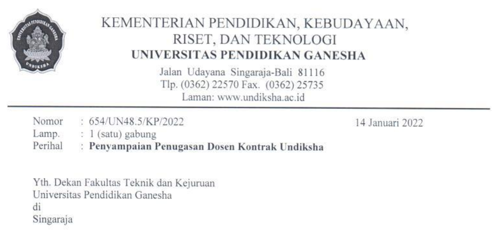
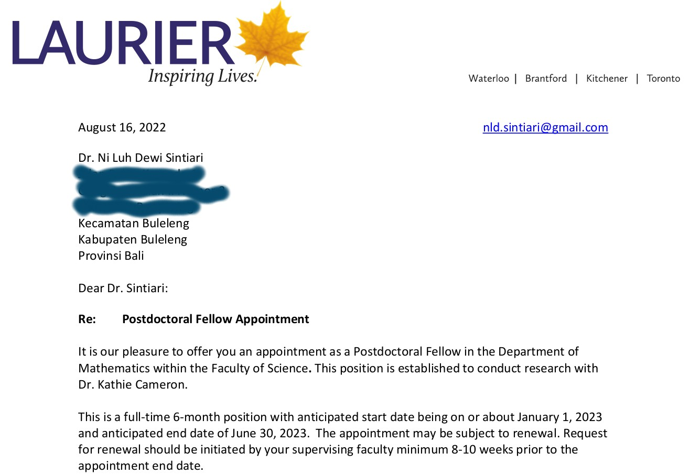
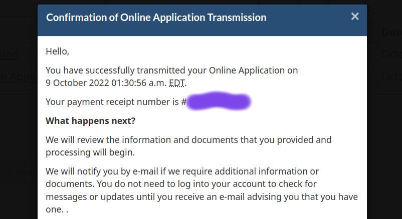
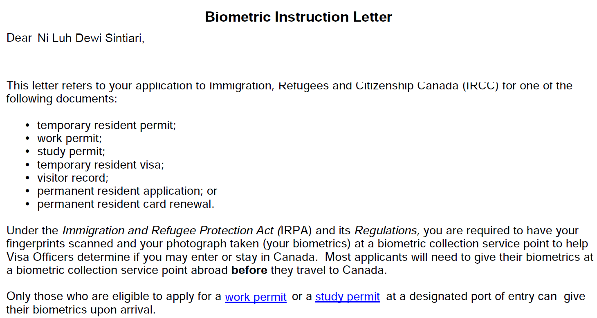
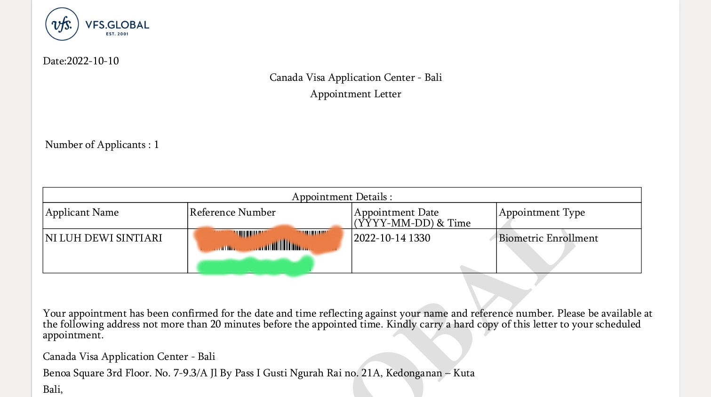
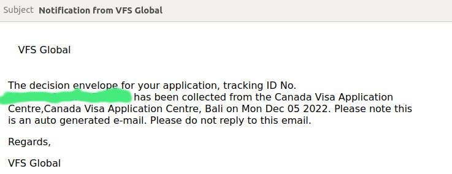
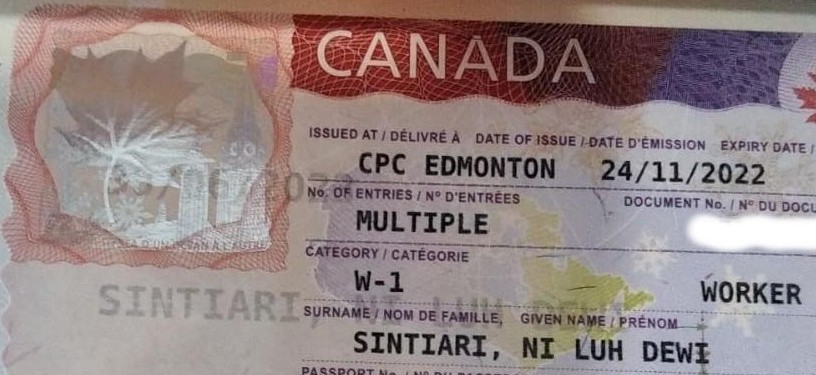
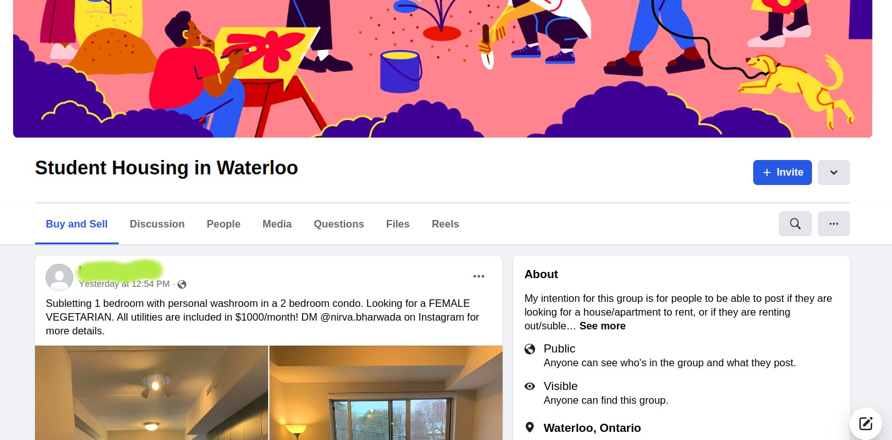
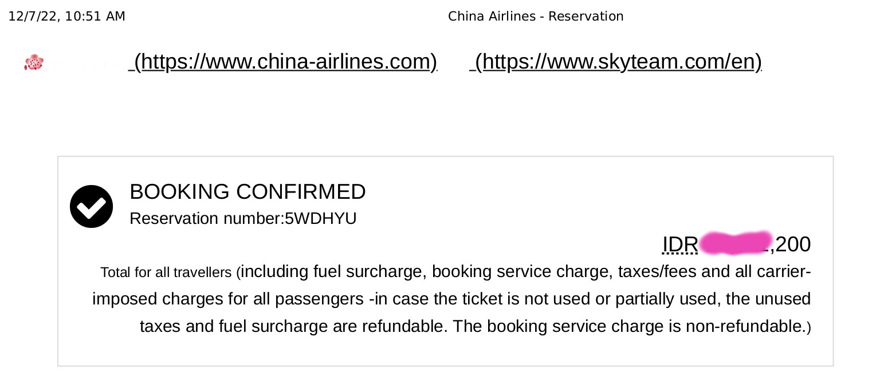
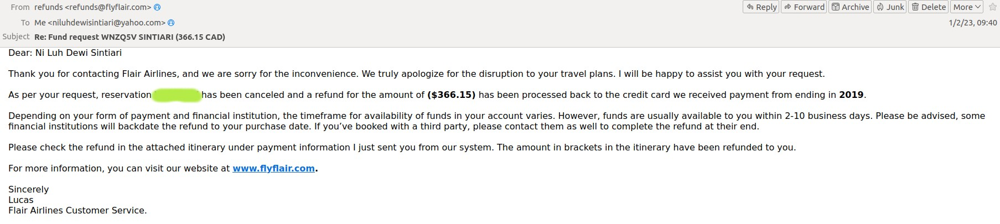

First week in Canada, mild winter.

Kali ini aku ingin berbagi tentang cerita perjalananku ke Waterloo, Kanada. Setelah hampir dua tahun lamanya tinggal di rumah, sekarang tiba saatnya aku meninggalkan rumah kembali. Tujuanku ke Waterloo adalah untuk melaksanakan short post-doctoral. Pasca sidang S3-ku dulu, aku mendapatkan tawaran dari salah satu peneliti untuk post-doctoral di Wilfrid Laurier University (WLU), di Waterloo, Kanada. Rencana ini sudah diundur beberapa kali karena berbagai hal. Sempat ragu-ragu, namun akhirnya aku memutuskan untuk berangkat. Tentu saja keberangkatanku ini atas izin pimpinan di Undiksha. Pada tulisan ini, aku akan berbagi tentang tahapan dari berbagai proses yang aku lalui hingga akhirnya berhasil menginjakkan kaki di negeri pecahan es ini. Cerita ini akan aku tulis dalam sebuah thread yang terdiri dari beberapa tulisan, agar lebih nyaman untuk diikuti.
29 Juni 2021 adalah hari besar dimana aku berhasil mempertahankan disertasiku dan diberikan gelar Dr. in Computer Science. Pada hari itu juga salah satu peneliti yang kebetulan termasuk dalam tim penguji disertasiku menawarkan aku untuk melaksanakan post-doctoral di Waterloo. And of course, I was so excited! Namun di sisi lain, masih ada keraguan di dalam hatiku apakah akan berangkat untuk post-doctoral atau kembali ke Indonesia secepatnya dan berfokus mencari pekerjaan tetap. Sebagaimana halnya ketika penelitian, kita selalu mencoba dua arah, ke arah positif dan negatif. Maka aku juga melakukan keduanya. Mencari peluang post-doctoral dan pada saat yang sama, mencari peluang kerja di Indonesia.
Hingga September 2021, belum ada posisi yang nampaknya membuatku nyaman di Indonesia, melihat berbagai aspek yang “mengikatku” pada saat itu: keluarga, pasangan, usia, dan perkembangan karir. Akhirnya aku hubungi lagi Kathie, PI post-doctoral yang menawarkanku posisi itu untuk menanyakan peluangku bisa berangkat ke Waterloo pada bulan Januari 2022. Beliau mengiyakan, namun karena proses administrasi yang panjang, mungkin aku baru bisa berangkat pada bulan April 2022. Okay, let’s see.
Januari 2022, after going through many complicated paths, aku akhirnya diterima sebagai dosen kontrak di Program Studi Ilmu Komputer Undiksha. Posisi ini cukup baik untukku, setidaknya aku melihat bahwa posisi ini memberikan aku sedikit keseimbangan antara keluarga dan perjalanan karirku di masa depan. Akhirnya aku memutuskan untuk membatalkan keberangkatanku ke Waterloo pada saat itu. Tanpa diduga, Kathie menawarkan untuk diundur saja jika nantinya aku masih berminat dan memiliki kesempatan lagi untuk berangkat.
Sebenarnya, bagi seseorang yang ingin berkarir sebagai dosen/peneliti di Indonesia, post-doctoral mungkin bukanlah sesuatu hal yang cukup penting secara administratif. Hal ini berbeda denagan apabila kita ingin berkarir di luar negeri. Untuk dapat menjadi seorang dosen/peneliti, proses yang dilalui cukup panjang, sebab segalanya dinilai berdasarkan track record riset/penelitian. Di luar negeri terutama di Eropa, Amerika, maupun Australia, seseorang harus menyelesaikan pendidikan S3 terlebih dahulu, kemudian melaksanakan beberapa post-doctoral dengan tujuan untuk berlatih dan menjalin kolaborasi dengan peneliti lain sehingga dapat menjadi seorang peneliti yang independen. Lain halnya dengan di Indonesia, untuk menjadi seorang dosen, menyelesaikan pendidikan S2 sudah cukup. Terlebih, pengalaman/track record tidak terlalu menjadi perhatian/syarat. But I will do what I think is right, and I believe is the best for me.
Beberapa bulan di Undiksha, aku mencoba bertanya kepada Wakil Rektor I Undiksha. Beliau adalah penanggung jawab utama bidang akademik di instansi ini. Dan tanpa disangka, beliau memberikan dukungan, termasuk juga Dekan FTK, Ketua Jurusan Teknik Informatika, Koordinator Program Studi Ilmu Komputer, beserta rekan-rekan dosen di prodi. Akhirnya, pada awal Juni 2022, aku menghubungi Kathie kembali dan persiapan keberangkatan dimulai.
Statusku di Waterloo nanti adalah sebagai pekerja, sebagaimana halnya posisi post-doctoral yang lainnya. Terlebih, karena pendanaannya tidak berasal dari institusi di Indonesia. Pihak WLU dalam hal ini mengurus segala proses yang berkaitan dengan izin kerjaku di Kanada, yang terkait dengan administrasi kampus dan lokal di Kanada. Biasanya pihak pemberi pekerjaan (dalam hal ini kampus) akan mendaftarkan kita Labour Market Imact Assessment (LMIA), yaitu sebuah dokumen untuk merekrut pekerja asing di Kanada. Pada dokumen tersebut akan diterangkan bahwa ada kebutuhan kerja asing untuk mengisi suatu posisi.pekerjaan, dan bahwa tidak ada pekerja Kanada atau residen tetap yang dapat melakukan pekerjaan tersebut. Namun pada umumnya, untuk pekerja di sektor universitas (dalam kasus ini misalnya sebagai post-grauate fellow), nantinya pihak kampus akan mendaftarkan LIMA-exemption, sebab kita tidak membutuhan LMIA untuk bekerja di Kanada. Serangkaian dengan penandatanganan Letter of Appointment, ada beberapa syarat lain yang harus dipenuhi. Misalnya pada kasusku, pihak universitas yang mengeluarkan ijazah S3-ku diminta untuk mengirimkan surat keterangan secara langsung ke WLU. Hal ini menjadi jaminan bahwa aku memang telah menyelesaikan pendidikan S3 ku dan dapat bekerja sebagai post-graduate fellow.
Tahap selanjutnya adalah pengurusan VISA. Untuk post-doctoral dengan pendanaan dari universitas di Kanada, maka kita membutuhkan visa dengan izin kerja (work permit). Informasi lengkap tentang pengurusan work permit dapat dibaca pada tautan ini. Untuk kasusku, terdapat beberapa dokumen yang dibutuhkan, di antaranya:
Jika dokumen sudah lengkap, maka kita dapat memulai aplikasi VISA atau work permit. Pengajuan work permit dapat dilakukan secara online melalui tautan ini. Biaya pengurusan VISA adalah 155 CAD dan biaya pengurusan data biometrik adalah 85 CAD, sehingga untuk proses ini total biayanya adalah 240 CAD atau kurang lebih 2,7 juta rupiah.
Setelah pengumpulan dokumen dan pembayaran, nanti akan ada notifikasi melalui email bahwa pengajuan sudah diterima. Selanjutnya kita perlu menunggu panggilan untuk pengambilan data biometrik. Prosesnya cukup cepat. Dalam 3 hari panggilan untuk pengambilan data biometrik sudah datang. Untuk pengajuan VISA Kanada, pengambilan data biometrik dapat dilakukan di VFS Global. Di Indonesia terdapat tiga VFS Global, yaitu di Jakarta, Surabaya, dan Bali. Saat itu, aku melakukan pengambilan data biometrik di VFS Global Bali, tempat yang terdekat dengan domisili. Sebelum datang ke VFS Global, kita perlu membuat janji temu terlebih dahulu melalui website VFS. Kita dapat hadir ke VFS pada jam kerja Senin-Jumat pukul 08.00-14.00 WITA. Nampaknya, pengajuan VISA Kanada tidak terlalu ramai. Pada saat itu hampir semua jadwal masih kosong.
Seminggu setelah pengumpulan dokumen, aku datang ke VFS dengan membawa surat permintaan data biometrik yang ikirimkan IRCC melalui akun pengajuan dokumen kita serta pasport. Untuk berjaga-jaga, aku juga membawa semua hard-copy dokumen yang aku kumpulkan secara online sebelumnya. Sebagaimana halnya lokasi pengambilan data biometrik untuk pengajuan VISA, keamanan di VFS cukup ketat. Nantinya, selama proses pengambilan data biometrik, semua barang termasuk ponsel harus dititipkan. Kita hanya diizinkan untuk membawa passport beserta dokumen lain yang dibutuhkan. Pengambilan data biometrik cukup cepat, kurang lebih selama 15 menit. Data yang diambil adalah data sidik jari dan foto wajah. Setelah pengambilan data biometrik, untuk selanjutnya kita hanya perlu menunggu informasi. Dalam kurun waktu satu bulan, biasanya akan ada notifikasi ke akun kita. Jika pengajuan ktia diterima, maka akan ada perintah untuk mengumpulkan passport ke VFS Global.
Sebulan kemudian, yang ditunggu-tunggu pun datang. Permintaan pengumpulan passport. Saat itu sudah akhir November, sekitar 5 minggu lagi dari waktu kontrak kerjaku sesuai dengan appointment letter. Aku datang lagi ke VFS Global. Jaraknya cukup jauh dari rumahku, sekitar 3.5 jam jika kita naik sepeda motor. Untuk pengumpulan passport ini, kita hanya cukup membawa surat perintah penyerahan passport dari IRCC yang dikirimkan melalui akun kita, serta tentu saja passport asli. Oh ya jika pasport diserahkan oleh orang lain, sebelumnya, kita harus meminta formulir dari VFS Global yang dapat diisi di rumah, kemudian diserahkan bersama dengan passport. Namun jika passport diserahkan sendiri, maka formulir tersebut dapat diisi di VFS Global pada saat penyerahan passport. Selama proses pencantuman VISA, akan ada notifikasi tentang progress yang sedang berjalan, melalui email kita. Kurang dari seminggu sudah ada notifikasi lagi dari VFS bahwa passport sudah dapat diambil di kantor VFS Global. Pengambilan passport dapat dilakukan sendiri ataupun diwakilkan dengan membawa bukti identitas pemilik passport dan orang yang mengambil, serta surat kuasa tanpa materai.
Akhirnya, awal Desember VISA dengan work permit sudah di tangan! Perlu diperhatikan bahwa VISA tersebut bukanlah work permit yang sebenarnya. Work permit formal akan diberikan setibanya kita di Kanada. Barulah setelah mendapatakan official work permit, kita bisa mulai bekerja sesuai dengan appointment letter.
Okay, setelah urusan passport dan VISA/work permit beres, tahap berikutnya adalah hunting rumah dan tiket pesawat. Ini adalah tahapan yang juga tidak mudah, dan cukup ribet. Terlebih jika budget kita terbatas. Untuk persiapan keberangkatan (termasuk tiket pesawat), dalam kasusku WLU tidak memberikan biaya, demikian pula dengan Undiksha. Namun dalam beberapa kasus, kadangkali pihak kampus tujuan ataupun kampus homebase dapat memberikan biaya tiket pesawat untuk post-graduate fellow.
Tahap pertama dari proses hunting tempat tinggal adalah mencari website tempat orang-orang menginformasikan penyewaan tempat tinggal, baik rumah maupun apartemen, serta bertanya-tanya kepada kenalan di Kanada (jika memang punya kenalan). Saat itu aku bertanya kepada supervisorku, pihak kampus, juga kepada beberapa kenalanku yang pernah tinggal dan sedang tinggal di Waterloo. Aku juga berusaha menghubungi perkumpulan mahasiswa Indonesia di Waterloo. Sayangnya di Waterloo belum ada Perkumpulan Pelajar Indonesia (PPI). Yang ada baru sebatas Perkumpulan Pelajar University of Waterloo.
Di Kanada biasanya ada dua tipe atau pilihan tempat tinggal utuk mahasiswa yaitu on-campus dan off-campus. On-campus artinya tempat tinggal yang disediakan oleh kampus tempat studi, ya kurang lebih semacam dormitory kampus. Sementara off-campus adalah tempat yang disewakan secara pribadi oleh pihak swasta. Secara umum, harga sewa tempat tinggal di Waterloo cukup mahal dibandingkan dengan Prancis. Misalnya untuk sebuah apartemen dengan 5 kamar tidur dan 2 kamar mandi harga sewanya sekitar 650-750 CAD per bulan atau sekitar 7,5 juta – 8,5 juta rupiah. Di kota Lyon, biasanya harga sewa kamar model ini berada di kisaran 5,5 juta – 6,5 juta rupiah.
Namun di Waterloo cenderung ada lebih banyak penawaran penyewaan kamar. Mungkin karena sistem pendidikan di sini menggunakan sistem tiga term (caturwulan), yaitu winter term, spring term, dan summer term. Mahasiswa biasanya hanya mengikuti dua term saja, dan menyewakan kamarnya untuk satu term selama mereka liburan (karena umumnya mereka sudah mengontrak selama 1 tahun penuh). Oleh sebab itu aku menyewa kamar hanya untuk 4 bulan, kemudian akan menyewa lagi untuk 2 bulan nanti sebab aku akan tinggal di Waterloo selama 6 bulan.
Dalam proses apartment hunting ini memang ada beberapa hal yang perlu dijadikan pertimbangan. Yang pertama tentu adalah budget. Kemudian apakah kita ingin tinggal sendiri atau sharing. Kedua opsi ini memiliki kelebihan dan kekurangan. Jika Anda memang tipe penyendiri, dan malas bersosialisasi di rumah, atau enggan berbagi kamar mandi, dapur, maupun space dengan orang lain, maka tentu tinggal sendiri lebih baik. Namun tentu biayanya juga jauh lebih besar. Aku sendiri, setelah pengalaman tinggal di Prancis selama sekian tahun lebih memilih untuk shared apartment. Pertimbangan utama adalah biaya sewa yang lebih affordable. Namun tentu ini juga memiliki kekurangan. Tinggal bersama dengan beberapa mahasiswa lain kadang beresiko dan membutuhkan usaha lebih untuk dapat beradaptasi dengan baik. Kadang kebiasaan yang berbeda satu sama lain, misalnya dalam hal kebersihan, jam tidur, atau kebiasaan lain (misalnya suka party dan sebagainya) dapat mengganggu kita. Aku sudah mengalami beberapa kali hal ini. Biasanya masalahku adalah watu tidur, sebab aku temasuk light sleeper, yang sangat mudah terbangun karena suara saat malam hari.
Di samping itu, yang harus juga menjadi pertimbangan adalah jarak tempat tinggal dengan kampus. Jika akses transportasi cukup mudah dan cepat, maka dapat dipertimbangkan untuk tinggal di wilayah yang mungkin agak jauh dengan kampus. Biasanya harga sewanya lebih murah (tapi perlu diingat juga bahwa biaya berlangganan transportasi umu perlu diperhitungkan juga pada budget kita). Namun jika akses transportasi tidak mudah, atau Anda termasuk orang yang enggan menghabiskan waktu di kendaraan, maka lebih baik mencari tempat tinggal yang dekat dengan kampus. Di Waterloo, menurutku moda transportasi umum tidak cukup nyaman (mohon maaf karena aku membandingkan dengan sistem di kota Lyon). Di Waterloo lebih praktis jika kita memiliki kendaraan pribadi. Jarak daerah yang sebenarnya tidak terlalu jauh seringkali membutuhkan waktu tempuh yang jauh lebih lama jika menggunakan transportasi umum dibandingkan dengan transportasi pribadi.
Proses apartment hunting adalah proses yang lama dan susah (terlebih jika budget kita minim). Aku menghabiskan waktu kurang lebih selama tiga minggu, hingga akhirnya aku mendapatkan sebuah kamar yang mengakomodasi kebutuhanku. Sebuah apartemen khusus mahasiswa perempuan dengan 5 kamar, yang lokasinya juga tidak terlalu jauh dari kampus WLU.
Baiklah, sembari mencari tempat tinggal, aku juga hunting tiket pesawat. Lagi-lagi pertimbangan utama di sini adalah budget. Apalagi bulan Desember-Januari merupakan peak season. Harga tiket sedang puncak mahalnya. Jadilah setiap hari pekerjaanku adalah memeriksa skyscanner untuk mencari tiket yang sesuai. Dalam proses pencarian tiket, kita harus serba hati-hati. Selain harga murah, perhatikan juga lamanya waktu perjalanan, berapa kali membutuhkan transfer pesawat (transit), apakah transfer tersebut merupakan connecting flight atau tidak, apakah di negara transfer dibutuhkan visa transit, dan sebagainya. Hal-hal ini kadang luput dari perhatian kita karena mengejar tiket murah. Misalnya untuk ke Kanada, terdapat beberapa pilihan tiket pesawat dengan transfer di USA, dengan harga yang lebih murah. Namun perlu diperhatikan bahwa untuk transit di USA, kita sebagai orang Indonesia membutuhkan VISA transit.
Proses reservasi tiket ini juga penuh dengan drama. Mulai dari harga yang sangat fluktuatif dan sangat cepat meroket, kartu ATM Indonesia yang tidak bisa digunakan untuk pembelian tiket lokal Kanada (yes, aku harus membeli tiket dari Vancouver ke Kitchener), hingga salah pemilihan tanggal saat reservasi. Fyuhhh... benar-benar menguji mental. Saat itu aku harus membeli tiket dari Vancouver menuju Kitchener. Penuh dengan dilema. Apakah harus ke Kitchener atau ke Toronto, sebab tiket ke Kitchener kurang fleksibel dari segi waktu (pilihannya hanya dua, aku harus menunggu selama 18 jam di airport, atau berkejaran dengan waktu karena hanya ada jeda selama 3 jam). Belum lagi masalah pembayaran yang bermasalah. Beberapa merchant di Kanada sepertinya tidak mengizinkan kita untuk memakai debit Card yang bukan produk Kanada/USA untuk pembayaran online, meskipun sudah ada logo VISA atau Mastercard. Beruntungnya ada salah satu rekan di Kanada yang bersedia membantu untuk membelikan tiket pesawat dan meminjamkan uang untukku. Thanks for that good friend.
And you know what, karena kecerobohanku, lagi-lagi aku membuat masalah dengan membeli tiket yang salah. Yapp, aku salah memilih tanggal karena panik. Memang beberapa minggu itu aku over stress karena memikirkan keberangkatan ke Kanada, dan sibuk dengan urusan ini itu. By the way, this might be a good thing to know. Who knows that ones day, you guys encounter a similar situation. Jadi, pada sistem penjualan tiket pesawat, ada yang dinamakan "24-hour policy". Ini semacam aturan bahwa tiket pesawat yang kita beli dapat dibatalkan dalam waktu 24 jam dari waktu pembelian tanpa adanya potongan biaya apapun dari maskapai - fully refundable. Hal ini sebenarnya ditujukan untuk melindungi konsumen, ya contohnya para buyer seperti pada kasusku ini. Misalnya saja jika konsumen melakukan kesalahan pada saat pemesanan, seperti salah memilih tanggal, tujuan, dan sebagainya, atau jika tiba-tiba terjadi sesuatu yang menyebabkan konsumen harus membatalkan pesanannya. So you guys should check this out, karena setiap maskapai punya aturan sendiri. Tapi sejauh yang aku baca, nampaknya sebagian besar maskapai menerapkan aturan ini.
Nah jadi, singkat cerita, waktu itu aku salah memilih tanggal penerbangan dari seharusnya tanggal 31 Januari, aku malah memilih tanggal 30 Januari. Jadi aku hanya memiliki waktu transfer selama 3 jam di Vancouver (dan ini self-transfer ya, jadi aku harus ke imigrasi, mengurus work permit, ambil bagasi, bea cukai, dan check-in ulang). Karena aku mau cari aman, aku memilih transfer 18 jam di Vancouver. Saat itu aku sudah tahu tentang 24-hour policy ini, jadi aku langsung cancel tiketnya, dan membeli yang baru. Benruntungnya temanku mau membantu untuk membayar dua kali. Katanya sih refund dari pembayaran yang pertama akan dikredit langsung ke kartu ATM yang digunakan untuk pembayaran dalam waktu 10 hari kerja which is equivalent to two weeks. But, but, but, after two weeks, temanku belum menerima kredit dari maskapainya (saat itu aku membeli tiket Flair airlines). Untungnya saat itu aku sempat mengambil screenshot pemesanan, jadi aku masih menyimpan booking number-nya. So, this is another note guys, take a picture or a screenshot of every single thing that you think is important, because you might need it later.
Okay, setelah aku cek dan ricek, usut punya usut uangnya masuk ke akun pembelian tiket pertama dalam bentuk travel credit yang berlaku 1 tahun. Oh my G-o-d! Aku langsung lemas, karena itu uang lumayan ya berhubung aku sedang dalam fase banyak pengeluaran, so 4 juta rupiah really means a lot for me! Langsung saja kemampuan googling aku kerahkan sekuat tenaga, dan aku berusaha mengumpulkan bukti bahwa Flair menyatakan uang refund akan dikembalikan ke kartu kredit yang digunakan saat pembelian, dalam bentuk "real money" dan bukannya travel credit. Jadi aku berusaha menghubungi Customer Service flair airlines, dan luckily dibalas cukup cepat dalam waktu 24 jam (kalau dibaca-baca, sebenarnya ada banyak bad review terkait maskapai ini lho). Setelah bertukar email beberapa kali, sekitar satu minggu kemudian uang kembali ke rekening temanku. Fyuhhh... lega sekali karena 4 juta rupiahku terselamatkan. Jadi, pesannya hati-hati ya saat membeli tiket. Jangan pernah membeli apapun dalam kondisi panik dan tidak stabil. Next time, kalau memang harus cancel tiket, lebih baik tunggu beberapa jam dan periksa apakah refund diberikan dalam bentuk travel credit. In that case, bayar tiket yang baru dengan menggunakan travel credit, dan jangan membayar ulang dari kartu kredit kita.
Okay, so that's all about pembelian tiket. Jika urusan tiket sudah selesai, maka saatnya packing. Pastikan untuk membuat list barang yang akan dibawa. Untuk keberangkatan ke Waterloo, karena hanya 6 bulan, aku memutuskan untuk tidak membawa terlalu banyak barang. Beberapa barang yang aku bawa diantranya adalah: dokumen perjalanan, obat-obatan, bahan masakan dan makanan (seperti bumbu jadi, bumbu pecel, abon ikan, snack, mie instan, biskuit, energen, jahe bubuk, teh/kopi), sapu lidi, sprei dan selimut, peralatan makan (seperti pisau, gunting, gelas piring, sendok/garpu), payung, set pakaian hangat (untuk di rumah dan di luar), alat cuci-menyuci (sikat cucian, soklin pewangi) untuk di minggu pertama, dupa (tidak boleh membawa korek, korek disini cukup mahal), sandal untuk di dalam rumah, handuk tipis, botol minum, dan beberapa keperluan mandi. Kali ini aku hanya membawa satu koper besar dengan kapasitas 23 kg dan sebuah ransel gunung dengan kapasitas kurang lebih 7 kg.
Baiklah, cukup sekian ceritaku kali ini. Cerita perjalananku ke Waterloo akan aku lanjutkan di part yang kedua.
First week in Canada, mild winter.
Perjalanan studi ke Lyon.
Seklumit cerita tentang menjadi dosen muda.
Sed varius enim lorem ullamcorper dolore aliquam aenean ornare velit lacus, ac varius enim lorem ullamcorper dolore. Proin sed aliquam facilisis ante interdum. Sed nulla amet lorem feugiat tempus aliquam.